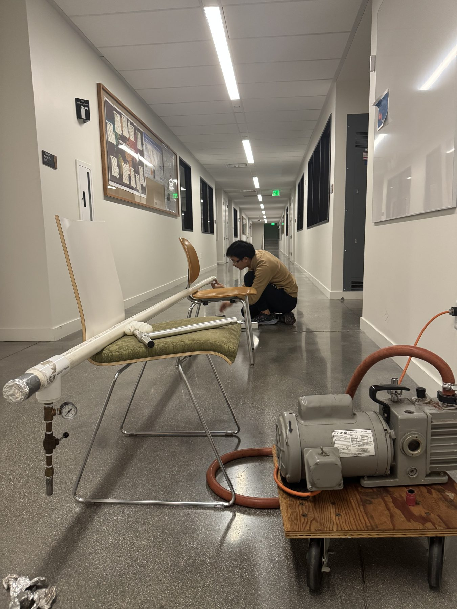

My classmate Larry Liu and I built a vacuum cannon as a side project between problem sets at Caltech. The concept was simple: evacuate a long PVC tube, place a ping-pong ball inside, and suddenly let atmospheric air rush in behind it. The pressure difference accelerates the ball down the barrel.
We designed and assembled the prototype together, experimenting with the tube setup and the mechanics of releasing the vacuum. It was a small project, but a fun demonstration of pressure forces and how quickly a simple physics idea can turn into a fabrication problem.
We eventually used it to play ping-pong-ball baseball in the Estella Laboratory sub-basement hallway. Not every project needs a formal assignment or a grand objective; sometimes I build something because the physics is interesting and I want to see it work.